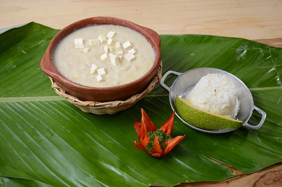

Mote de Queso

Go back to index
Description
This is a creamy soup popular in the savannahs of the Cordoba and Sucre provinces in Colombia, South America
Ingredients
- Costeno cheese
- Name root
- Water
- Costeno suero or sour cream
- Coconut milk
- Garlic
- Onions
- Olive oil
Steps
- Peel and chop the name root in small pieces. Set aside.
- Peel and crush the garlic cloves. Set aside.
- Peel and chop the onion in small pieces. Set aside.
- Chop the costeno cheese in square pieces, about half an inch size. Set aside.
- Put a large soup pan on medium fire. Add some olive oil. Wait for the oil to be hot.
- Add first the chopped onions. Wait until the onion are cooked, but not brown. Add the garlic.
- Add about 4 liters of boiling water. Add some salt to start the broth.
- Add the chopped name root and let the soup cook until the name root mixes with the water. You want the starch of the name root to thicken the broth. About half an hour.
- Add the coconut milk to the soup. Mix well and let the soup absorb the flavor from this milk. Add some salt to taste, but not too much as the remaining ingredients are also salty.
- After the soup is thick, add some costeno suero or sour cream. Mix well.
- 10 to 15 minutes before serving, add the chopped costeno cheese. Keep mixing so that the cheese does not stick to the bottom.
- Serve hot and enjoy with some hot sauce if you like it.